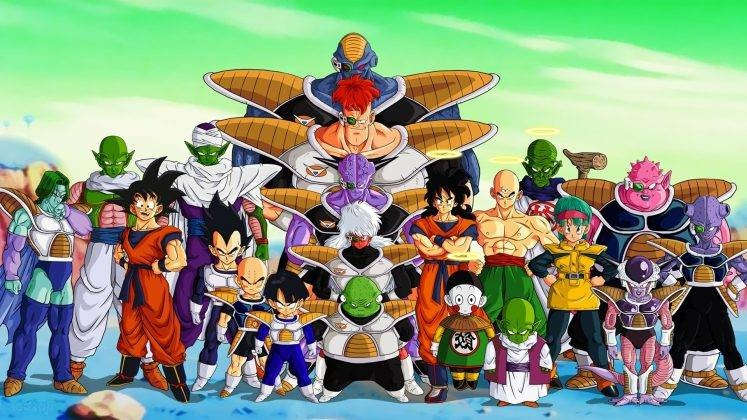
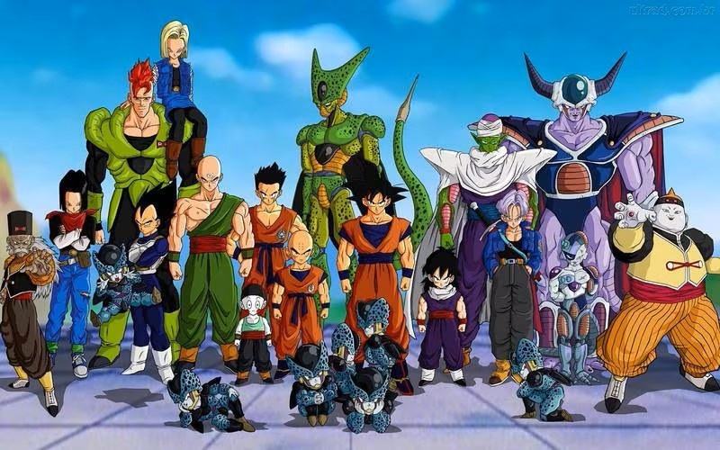
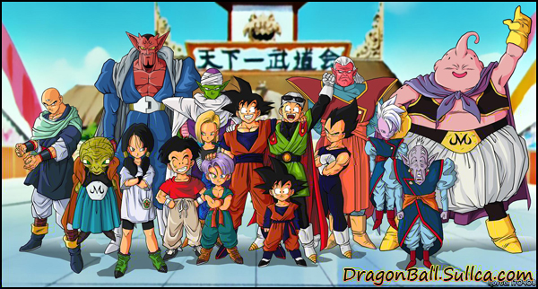
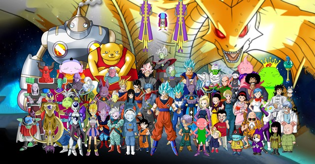

DRAGON BALL
La Primera temporada de Dragon ball se basa en la historia de Goku, un niño con cola de mono que vive solo despues de la muerte de su abuelo, el niño de una fuerza sobrehumana conoce a Bulma, una intrepida y aventurera mujer que quiere juntar las siete esferas del dragon, ya que segun cuanta la leyenda estas esferas pueden conceder culaquier deseo a quien las junte. Goku se une a bulma para conocer el mundo y pelear con luchadores mas fuertes, dentro de esta primera temporada se enfrenta a un rey maligno llamado Pilaf, quien junto sus secuaces quieren conquistar el mundo, goku conocera a el maestro rochi quien lo entrena para particpar en el torneo de las artes marciales, lugar donde se enfrentan los peleadores mas fuertes del mundo, enfrenta a la pantrulla roja, una organizacion criminal que busca dominar el mundo, ademas goku se enfrenta a un gerrero maligno legendario llamado Piccolo Daimaku quien amenaza a la tierra. finalmente goku vuelve a particpar en el torneo de las artes marciales donde enfrenta al peleador mas poderoso que ha conocido en esta primera temporada.
DRAGON BALL Z : LA SAGA DE FREEZER
Esta saga comienza con un goku mas grande y enfrentando a los sayajines amigos de radditz, vegeta y napa, guerreros del mismo origen de goku pero que trabajan conquistando planetas para el temible freezer, durante la batalla con los sayajines algunos amigos de goku pierden la vida, uno de ellos es picolo quien es la otra mitad de kamisama creador de las esferas del dragon d ela tierra, por lo que deberan ir a namekusei para juntar las originales esferas del dragon con las cuales pretenden revivir a estos amigos, en ese planeta se encuentra freezer buscando cumplir su deseo de obtener la vida eterna, goku se reencuentra con vegeta uno de los sayajines que lo lastimo en la tierra y unen sus fuerzas para derrotar al malvado freezer, la batalla destruye por completo el planeta namekusei y goku se transforma en el legendario super sayajin, esto hace que freezer muestre su maximo poder desatando una batalla terrible entre ambos.
DRAGON BALL Z : LA SAGA DE CELL
El malvado freezer es reconstruido y llega a la tierra con su padre buscando venganza, aparece un misterioso joven quien tambien puede transformarse en super sayajins y los derrota muy facilmente, en ese momento aparece goku quien se ha vuelto mas fuerte, este guerrero misterioso da aviso a goku que dentro de unos años apareceran unos andorides muy poderosos para derrotarlos y le entrega una medicina ya que sufrira del corazon, estos androides resulta que son los unicos enemigos ya que aparece un mostruo llamado cell quien busca absorver a los androides para desarrollarse por completo y asi dominar el mundo, los guerreros z deben entrenar mucho y alcanzan un segundo nivel mas de poder, un super sayajins mas poderoso, sin embargo esto no es suficiente y deberan ser mas listos para poder derrotar al mostruo, quien organiza un torneo de artes marcilaes en donde busca derrotar a todos los guerreros z.
DRAGON BALL Z : LA SAGA DE MAJIN BO
Luego de la epica battala con cell en donde goku muere y se queda entrenando en el mas alla, se organiza un torneo de artes marciales en donde goku quiere partipar por el dia, obtiene un permiso y llega a la tierra a combatir en este torneo, conoce a su hijo goten y ve a un gohan mas grande junto a su novia, en este torneo aparecen unos misteriosos guerreros con un poder maligno quienes atacan a gohan y huyen del lugar, tambien aparecen un supremo kayosama quien los advierte de un mago que intenta revivir a un poderosos mostruo con ayuda de energia vital, los guerreros van en busca de este mago para detenerlo pero el mago logra su cometido, el mostruo llamado majin boo tiene un poder abrumador, se enfrenta a vegeta y lo derrota, tambien sufre transformaciones las que lo llevan a ser aun mas poderoso, trunks y goten son entrenados para fusionarse y derrotarlo pero tambien son derrotados por lo que goku debera alcanzar otro nivel de poder para combatir a este ser maligno.
DRAGON BALL SUPER
Goku conoce al dios de la destruccion y entiende como funciona el universo, descubre guerreros realmente poderosos no solo del universo al que pertenece si no que tambien de otros universos, pide ser entrenado por el entrenador del dios de la destruccion y el junto a vegeta son aceptados, conoce a zeno sama quien es el ser supremo mas poderoso a quien incluso los dioses le temen, este personaje es muy solitario y se hace amigo de goku quien le sugiere crear un torneo de artes marciales entre los universos para ver cual es mas fuerte, zeno sama acepta y se crea el torneo de los universos en donde goku junta a un equipo quienes no son muy amigos entre ellos, junto a estos guerreros intenta derrotar a los otros universos desencadenando unas batallas epicas ya que aparecen guerreros como jiren o topo quien son semi dioses muy podrosos luchan por el universo 6, esta vez goku debe llegar a un nivel de poder jamas visto llamado el Ultra Instinto
